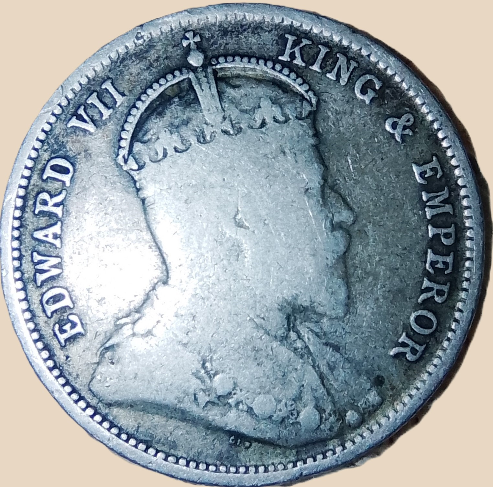
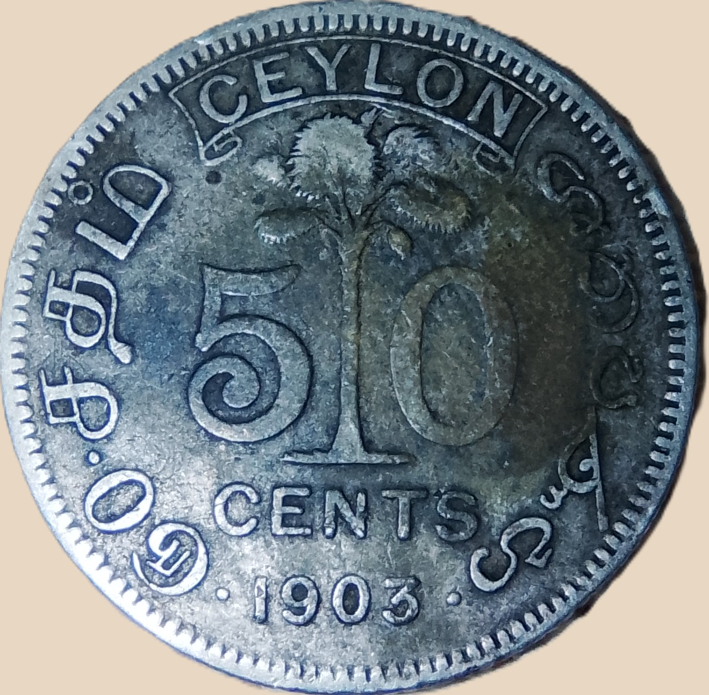

Fifty cents (1902-1910)-Ceylon
Edward VII
A definitive Ceylon decimal currency fifty cents silver coin


Reverse:
- The text "CEYLON" in a scroll on the top.
- "50" divided by a talipot palm in the center.
- The text "ශත පණහ•1903•ரு0•சநம்" within the denticle circle.
Obverse:
- The crowned bust of King Edward VII
- The text "EDWARD VII KING & EMPEROR" inside the rim, broken by the crown.
Specifications
- Denomination:50 cents
- Alloy: Silver (.800)
- Diameter: 24mm
- Thickness: 1.5mm
- Weight: 5.83g
- Edge: milled